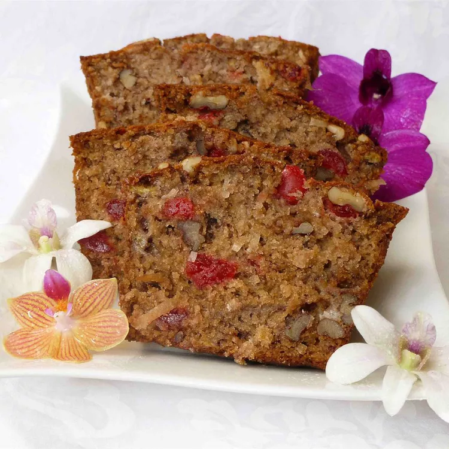

Hawaiian Banana Nut Bread

Description
This is a culmination of several recipes put together that is very easy and very delicious.
Ingredients
- 3 cups all-purpose flour
- 3/4 teaspoon salt
- 1 teasppon baking soda
- 2 cups white sugar
- 1 teaspoon ground cinnamon
- 1 cup chopped walnuts
- 3 eggs, beaten
- 1 cup vegetable oil
- 2 cups mashed very ripe banana
- 1 8oz. can crushed pineapple, drained
- 2 teaspoons vanilla extract
- 1 cup flaked coconut
- 1 cup maraschino cherries
Steps
- Preheat oven to 350 degrees F or 175 degrees C.
- Grease two 9X5 inch loaf pans.
- In a large mixing bowl combine the flour, salt, baking soda, sugar and cinnamon. Add the walnuts, eggs, oil, banana,
pineapple, vanilla, coconut and cherries; stir just until blended. Pour batter evenly into the prepared pans.
- Bake at 350 degrees F or 175 degrees C for 60 minutes, or until a toothpick inserted into the center of a loaf comes
out clean. Cool in the pan for 10 minutes, then remove to a wire rack to cool completely.